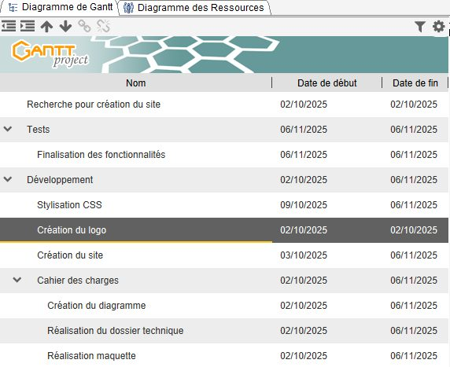
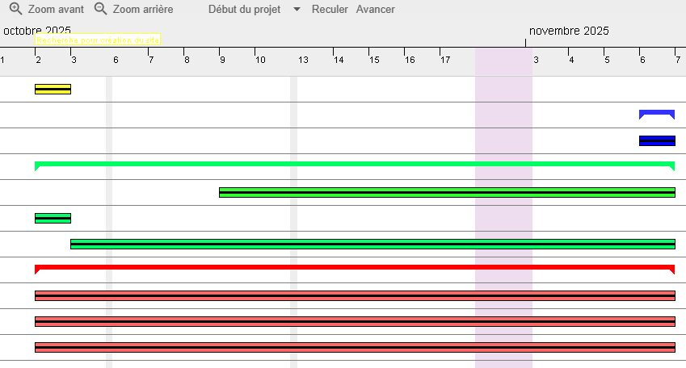
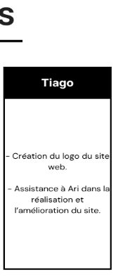
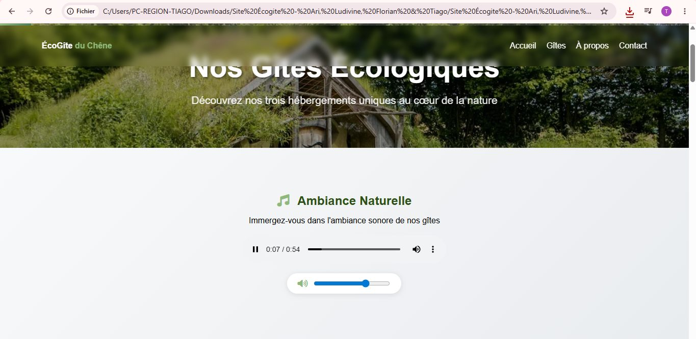
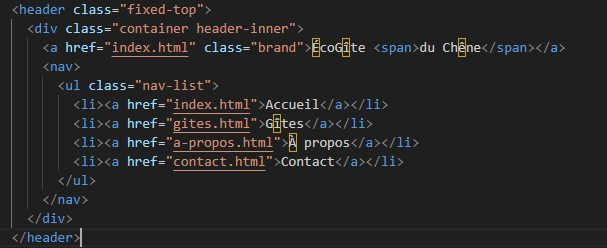
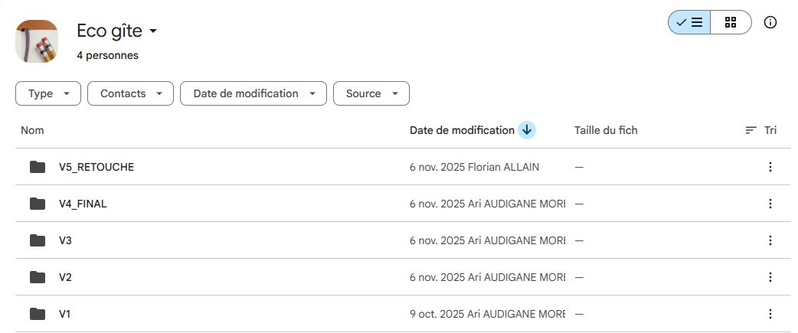
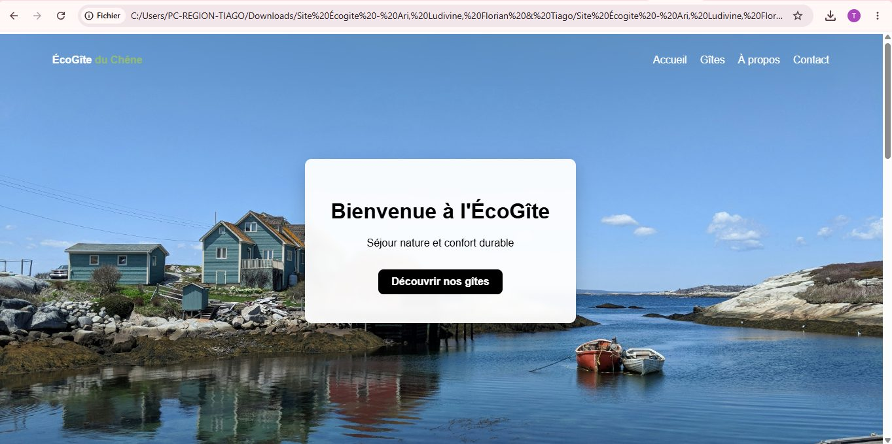

Contexte
L'AP-0 est le premier atelier professionnel de la 1re année. L'organisation cliente est un éco-gîte qui a besoin d'un site web. Le cahier des charges fixe les attentes, et l'équipe doit livrer le site dans le délai de l'atelier, en se répartissant le travail.
Planification du projet
Nous avons commencé par un diagramme de Gantt, réalisé avec GanttProject, pour découper le projet en phases et répartir le travail dans le temps : recherche, cahier des charges (diagramme, dossier technique, maquette), développement (création du site, du logo, stylisation CSS) et tests. Chaque couleur correspond à un type de tâche :
- Rouge — rédaction et lecture du cahier des charges
- Jaune — recherches pour la création du site
- Vert — développement
- Bleu — tests
- Rose — période de vacances, pour ne pas planifier de tâches quand l'équipe n'était pas disponible
Intégrer les vacances dans le planning nous a évité de prévoir des tâches impossibles à tenir.
Réalisation
Mon rôle dans l'équipe
Le travail était réparti entre les quatre membres : développement principal du site, schéma de navigation, maquette et Gantt. Mon rôle : créer le logo du site et appuyer le développeur principal dans la réalisation et l'amélioration du site.
- Logo — création du logo de l'éco-gîte, prévue dès le début dans le Gantt.
- Menu bandeau flouté — réalisation du bandeau flouté qui sert de menu : il porte les boutons de direction qui permettent de naviguer entre les pages du site.
- Versions successives du site — plutôt que de tout livrer d'un coup, l'équipe a produit plusieurs versions du site, chacune intégrant de nouvelles fonctionnalités, jusqu'à la version finale qui les regroupe toutes.
- Tests — des phases de test étaient prévues dans le Gantt pour vérifier le site.
Ce que j'en retiens
Travailler par versions permet de toujours avoir un site qui fonctionne, et de montrer l'avancement au fur et à mesure. Le Gantt m'a appris à anticiper les périodes où l'équipe n'est pas disponible.
Compétences mobilisées (bloc 1, épreuve E5)
Ces compétences sont reportées dans mon tableau de synthèse E5.
Preuves






